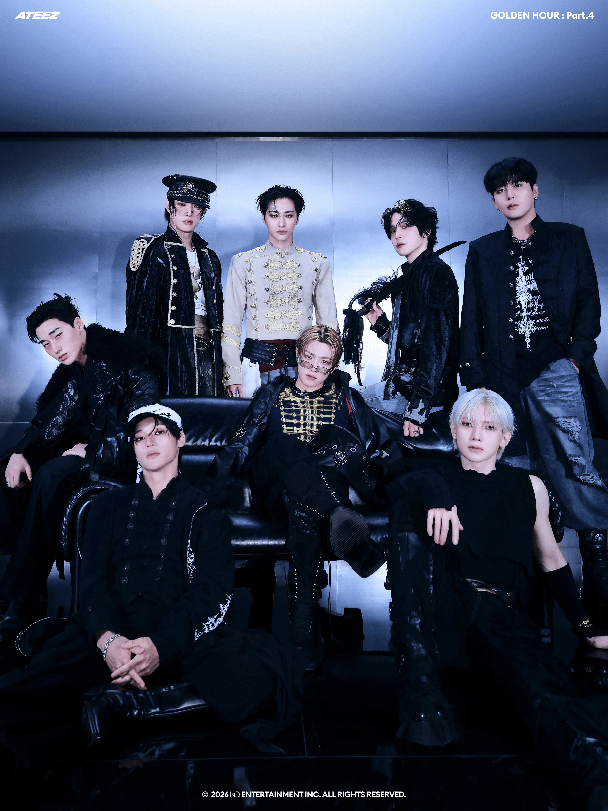

ATEEZ is a South Korean boy group formed
by KQ Entertainment, recognized for
their
cinematic universe and powerful stage presence. Their music often blends storytelling, performance, and
emotion, creating a distinctive identity in the K-pop industry.
The group consists of eight members: Hongjoong, Seonghwa, Yunho, Yeosang, San, Mingi, Wooyoung, and
Jongho. They debuted on October 24, 2018, with the EP "Treasure EP.1: All to Zero". ATEEZ is known for
their powerful performances, unique concepts, and strong connection with their fanbase, ATINY. They have
gained international recognition and have a growing discography that includes multiple albums and
singles.

The name ATEEZ stands for "A TEEnager Z", symbolizing a journey from A to Z
and representing everything a teenager could dream of achieving.
The group is made up of eight members — Hongjoong, Seonghwa, Yunho, Yeosang,
San, Mingi, Wooyoung, and Jongho — each bringing their own unique charm,
talent, and personality to the team.
Since their debut in 2018, ATEEZ has inspired millions around the world with
their passion, ambition, and powerful message of chasing your dreams without
fear. Through every era, performance, and song, they continue to remind
ATINY that the greatest adventures begin when you dare to follow your own path.
Building on this journey, their discography continues to evolve through concept-driven eras that expand
their storytelling universe. One of these chapters is the GOLDEN HOUR series, which explores themes of
growth, intensity, and emotional transformation.
Released on February 6, 2026, GOLDEN HOUR: Part.4 serves as the 13th mini-album in their career and
continues this narrative expansion. The project highlights a more confident and mature side of the
group, emphasizing adrenaline-filled energy and cinematic storytelling.
The album features five tracks that explore a range of distinct atmospheres and musical concepts, with
the title track “Adrenaline” delivering a powerful and mysterious energy. The closing track, “Choose,”
is dedicated to ATINY, further strengthening the emotional bond between the group and their fans.